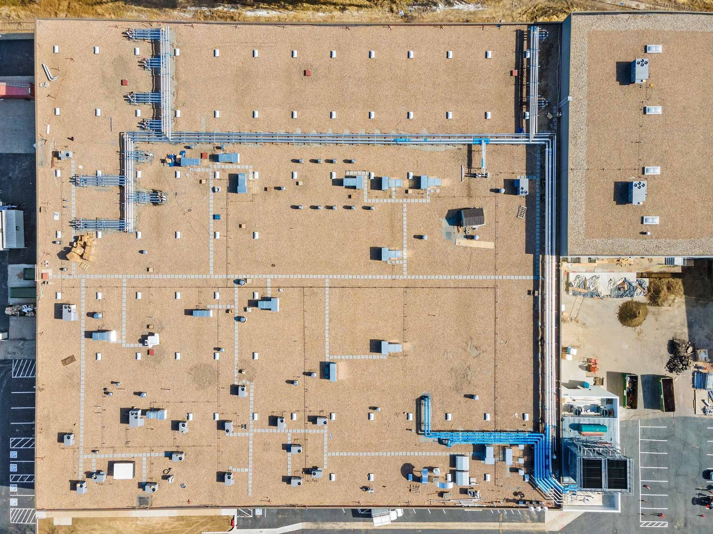
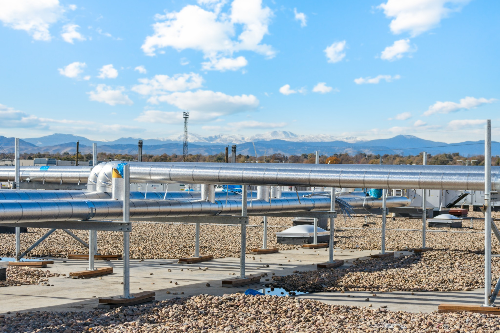
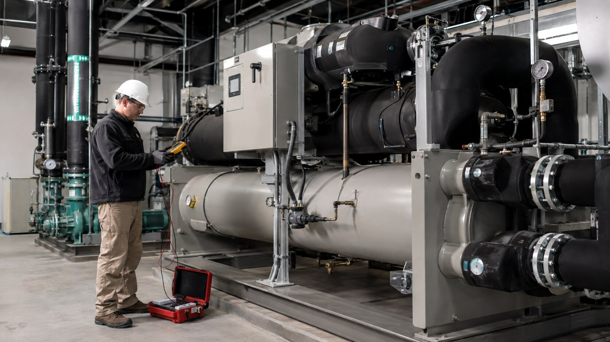

System planning
Application review, equipment selection support, capacity alignment, redundancy strategy, and maintainability coordination.
Equipment / machinery / commissioning
Commercial chiller systems planned around required capacity, operating conditions, redundancy, service access, controls integration, startup, and verifiable performance.
Discuss your project →
Equipment expertise
A successful cooling plant depends on equipment selection, access, rigging, electrical and controls interfaces, flow requirements, startup procedures, and the piping system surrounding it.
We coordinate those dependencies early so the selected machinery can be installed, connected, tested, and maintained without preventable conflicts.


Equipment-side capabilities
Application review, equipment selection support, capacity alignment, redundancy strategy, and maintainability coordination.
Manufacturer and vendor coordination, submittal support, lead-time tracking, and delivery planning.
Receiving, setting, alignment, accessory installation, and coordination of equipment interfaces.
Point-to-point planning with BAS, electrical, equipment controls, sensors, and safeties.
Pre-start checks, manufacturer coordination, operational verification, and deficiency resolution.
System-level functional support, performance verification, documentation, and turnover coordination.
Execution priorities
Service access and equipment clearance
✓Flow, pressure, and temperature requirements
✓Controls and BAS interface coordination
✓Startup and commissioning prerequisites
✓Owner training and closeout documentation
✓Future maintenance and replacement planning
✓Equipment · controls · commissioning
Fabrication · installation · tie-ins
Bring us in early
We can review equipment schedules, capacity requirements, plant configuration, access, controls, piping interfaces, and startup requirements before they become procurement or installation constraints.
Start the conversation →